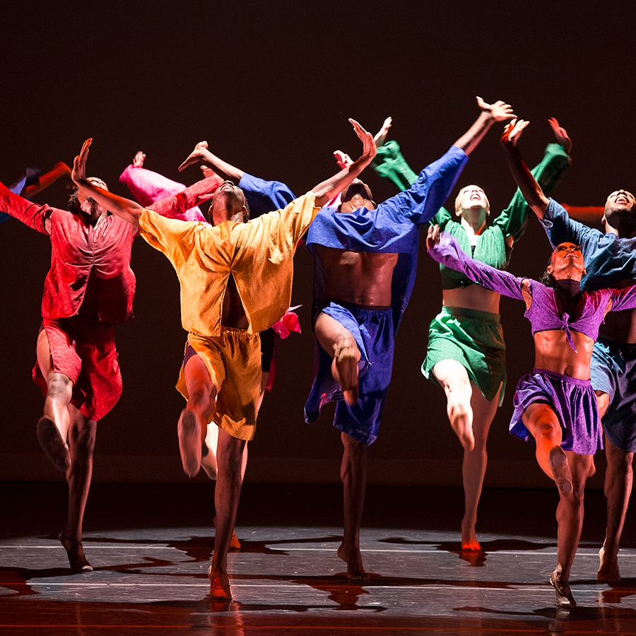
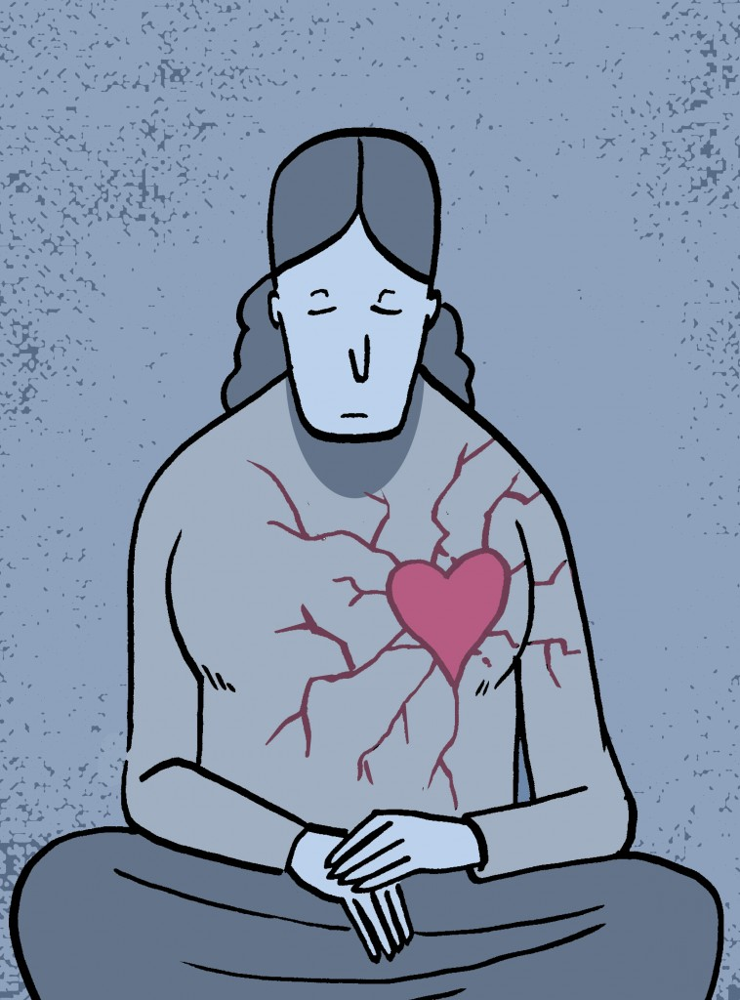

1. Danza:Un acto o movimiento de un cuerpo con fines recreativos o artísticos.
2. Dinero: Moneda, billetes y otros medios de cambio para comprar o vender cosas.

3. Dolor: Una sensación física o emocional de malestar o sufrimiento.
4. Deseo: Un sentimiento de querer algo con gran intensidad.
5. Día:Un período de 24 horas que se utiliza para medir el tiempo.